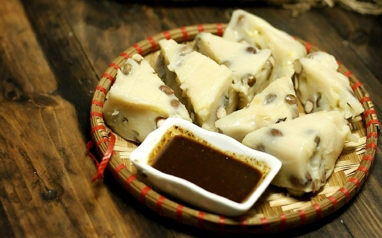

Bánh đa Thổ Hà là đặc sản không thể bỏ qua khi ghé thăm Bắc Giang. Bánh đa ở đây có hương vị khác hẳn nơi khác do được làm bằng công thức bí truyền kết hợp với các lựa chọn nguyên liệu kỹ càng, tươi ngon. Bánh đa Thổ Hà có 2 loại là bánh đa nem và bánh đa nướng. Bánh đa nướng vàng ruộm, giòn tan thơm bùi vị vừng, lạc. Bánh đa nem có màu trắng ngà, mềm dẻo, dai ngon rất được ưa thích.
Vải thiều Lục Ngạn
Nhắc đến Bắc Giang người ta sẽ nghĩ ngay đến mùa vải đỏ rực góc trời Lục Ngạn. Quả vải thiều ở Lục Ngạn kích thước lớn, khi chín có màu đỏ, vỏ mỏng, cùi dày, hạt lép. Vị vải ngọt đậm, giàu dinh dưỡng và ăn bao nhiêu cũng không biết chán. Chỉ khi được trồng tại Lục Ngạn thì loại vải này mới cho ra hương vị tuyệt hảo nhất. Ngoài ra, ở đây còn có vải sấy thơm dẻo để làm quà có thể bảo quản được lâu hơn vải tươi.
Rượu Làng Vân
Rượu làng Vân được nấu từ nếp cái hoa vàng thơm ngon được trồng ở làng Vân Xá. Rượu làng Vân đã trở thành thương hiệu đáng tự hào cho Bắc Giang. Rượu có màu vàng trong, đậm vị, thơm ngon, dễ uống có thể chinh phục được những vị khách khó tính nhất.

Bánh đúc Đồng Quan TP Bắc Giang
Bánh đúc là món ăn dân dã nổi tiếng ở Đồng Quan. Đây là loại bánh được làm từ bột tẻ, lạc, nước vôi trong với những bí kíp nấu riêng. Khi ăn chấm cùng tương sẽ mang đến một hương vị khó lòng quên được.
Bánh Vắt Vai
Bánh vắt vai là loại bánh độc đáo tại Bắc Giang. Bánh làm từ gạo nếp, đường, đậu xanh, lá chuối, rau ngải cứu… Gạo nếp nghiền nhỏ bằng cối xay đá; lá ngải cứu luộc lẫn nước vôi trong cho bớt vị chát, đắng, sau đó nghiền nhỏ trộn cùng bột nếp. Sau khi nặn và gói xong, bánh được hấp cách thủy khoảng hai giờ đồng hồ, vớt ra để ráo nước là có thể dùng được.
Xôi Ba Màu
Xôi ba màu là đặc sản của người Nùng ở Bắc Giang. Màu sắc của xôi được tạo thành từ các loại lá tự nhiên như lá cẩm, nghệ, lá cây sau sau. Xôi 3 màu được dùng để cúng tổ tiên trong các dịp lễ Tết, giỗ chạp.
Xôi Trứng Kiến
Xôi trứng kiến là món ăn đặc sắc của người dân tộc Tày ở Bắc Giang. Trứng kiến được mang về làm sạch rồi xào chín với hành khô. Xôi nếp cái hoa vàng đồ chín rồi trộn với phần trứng kiến đã xào. Xôi dẻo mềm, vị béo ngậy của trứng kiến và thơm ngào ngạt mùi hành phi khiến ai ăn một lần là nhớ mãi.
Chè kho Mỹ Độ
Chè kho là thức quà được người Bắc Giang nấu vào những dịp lễ Tết, giỗ chạp. Chè có màu vàng sậm của đỗ và mật, điểm thêm những hạt vừng trắng rang thơm lừng. Vị béo ngậy của chè xanh, ngọt thanh của mật, vị béo bùi của vừng khiến món chè kho trở thành đặc sản nổi tiếng nơi đây.